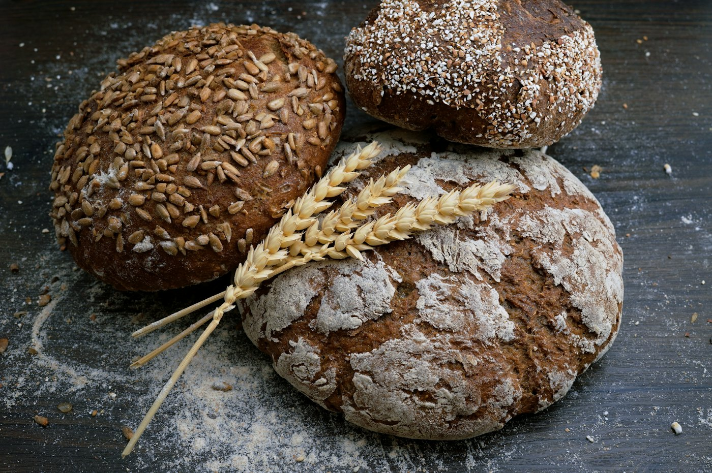
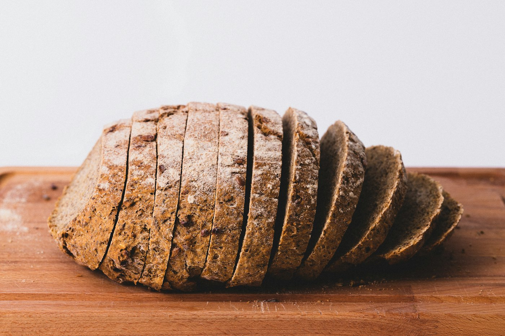

Krentenbrood
Zonder of met spijs, in drie maten.

Ambachtelijke bakkerij in Voorst
Al sinds 1852 wordt er brood gebakken in het pand aan de Rijksstraatweg 24. Het krentenbrood, de gevulde koeken en de speculaas bakken we nog altijd naar de recepten van bakker Wim Bril.
Ma t/m za open vanaf 07.30
Sinterklaas en kerst. Speculaaspoppen, banketletters, banketstaven en kerststollen staan in het assortiment.
Toen er na de oorlog weer ruimte kwam voor wat luxe, bedacht bakker Wim Bril de recepten voor het krentenbrood, de gevulde koeken en de speculaas. Daarmee werd de bakkerij ver buiten Voorst bekend. De familie bakt ze nog steeds.
Zonder of met spijs, in drie maten.
Per stuk of per vijf.
Gewoon of gevuld.
Alles wat u in de winkel vindt, met de actuele prijzen. Wilt u iets apart laten leggen? Geef het door via het bestelformulier of bel even.


Kies wat u wilt hebben en hoeveel. Wij leggen het voor u klaar in de winkel.
Liever even bellen? 0575-501271
Sinds tenminste 1852 wordt er brood gebakken in het pand aan de Rijksstraatweg 24. Het huis heette toen nog E59.
Willem Bril, zoon van molenaar Wilhelmus uit Wilp, trouwt met Gerdina Johanna Belt, zelf een bakkersdochter. Als beroep staat er grutter en bakker. Het echtpaar vestigt zich hoogstwaarschijnlijk dat jaar op E59 in Voorst.
Zoon Antonius Lambertus vertrekt in 1886 naar Deventer en komt in 1889 terug als bakker en grutter. Hij volgt zijn vader op en woont er met zijn zusters Maria en Bartha.
Neef Gerhardus Martinus, ook bakker, komt in het pand wonen en trouwt dat jaar met Willemina Veenhuijs. Ze krijgen zes kinderen.
Wim begon net voor de oorlog als bakkersknecht bij zijn vader en neemt in 1950 de bakkerij over. Na de oorlog bedenkt hij de recepten voor krentenbrood, gevulde koek en speculaas.
Paul wilde eigenlijk nooit bakker worden, maar nam het vak toch over. Mijn vader was mijn leermeester en daarna heb ik het op mijn manier gedaan.
De zesde generatie werkt samen met vader Paul. Met nieuwe variaties, en met behoud van het traditionele krentenbrood, de speculaas en de gevulde koeken.
De oude stenen gewelfoven heeft meer dan 150 jaar dienst gedaan: eerst gestookt met takkenbossen en hout, vanaf ongeveer 1970 met olie. Hij gaf een prachtig bakresultaat, maar was lastig te stoken. De nieuwe elektrische oven is speciaal voor Bakkerij Bril gemaakt en zit in een oud geëmailleerd jasje, zodat de bakkerij haar nostalgische sfeer houdt. Vanuit de winkel kijkt u zo de bakkerij in.
Naar een tekst van G. Groenewold.
0575-501271
info@bakkerijbril.nl
| Maandag | 07.30 – 17.30 |
|---|---|
| Dinsdag | 07.30 – 17.30 |
| Woensdag | 07.30 – 17.30 |
| Donderdag | 07.30 – 17.30 |
| Vrijdag | 07.30 – 19.00 |
| Zaterdag | 07.30 – 17.00 |
| Zondag | gesloten |